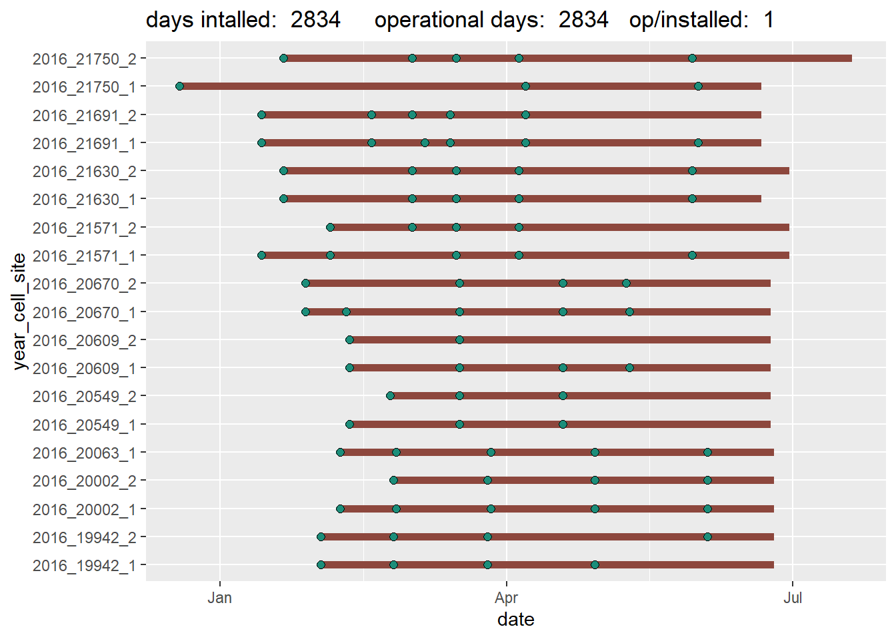
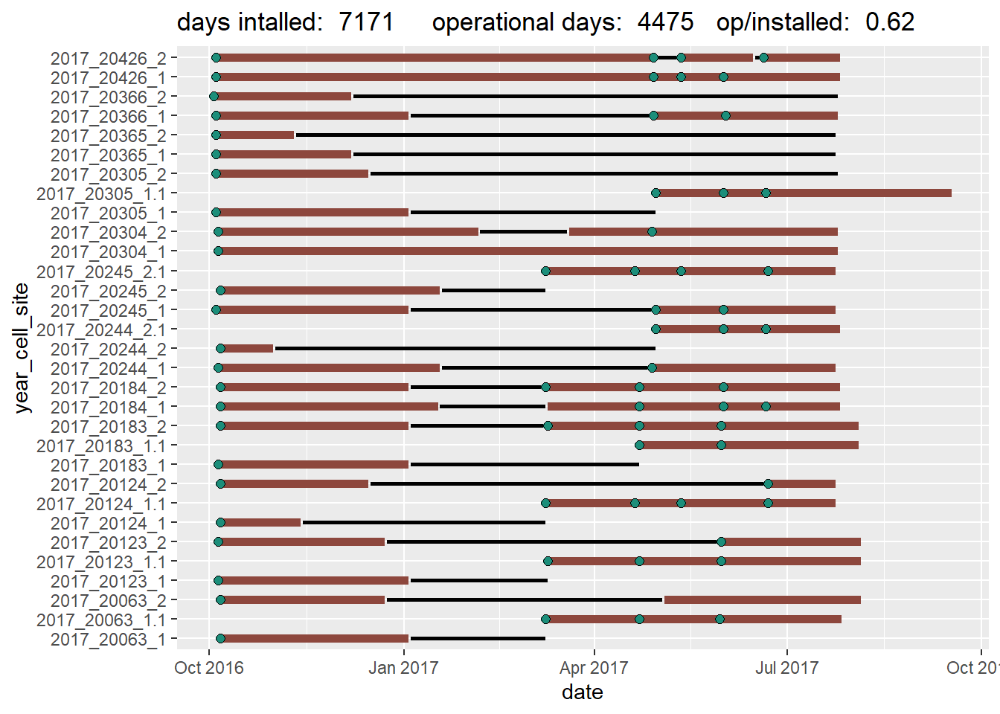
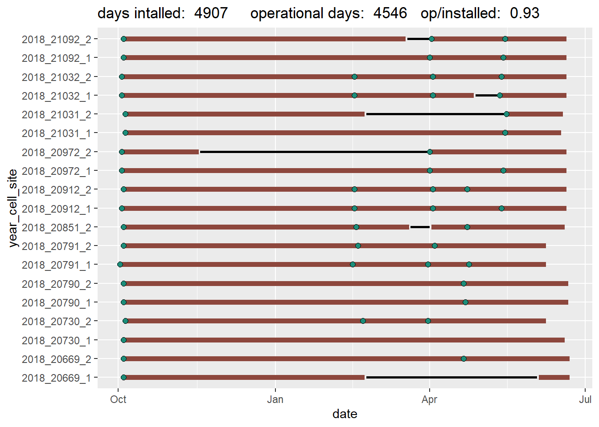
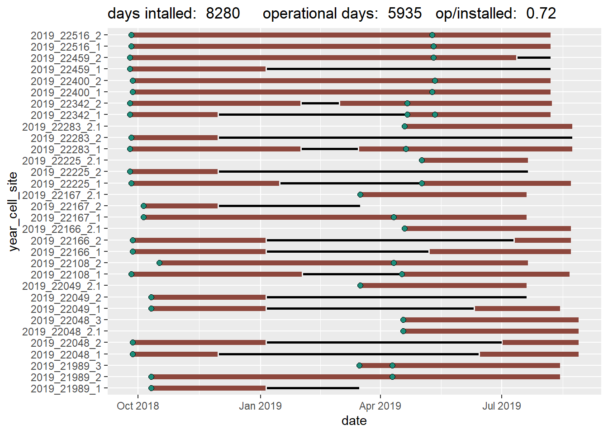

all models waic ranking,
reversible jump MCMC,
parameter MCMC samples table and graphs.
2016 model selection - stand by
stand by
species density estimates (per 100 sqkm)
| species | n_effective | density | hdi_89pct_lower | hdi_89pct_upper |
|---|---|---|---|---|
| AmericanBadger | 474 | 1.311 | 0.60 | 25.99 |
| AmericanMarten | 900 | 17.299 | 6.04 | 62.85 |
| Bobcat | 595 | 71.639 | 7.25 | 161.95 |
| Coyote | 760 | 63.394 | 23.57 | 148.05 |
Covariates on detection (x = not significant)
| AmericanBadger | AmericanMarten | Bobcat | Coyote | |
|---|---|---|---|---|
| lure | x | -0.818 | x | -0.346 |
| snow | x | x | x | x |
| temp | x | x | 1.376 | x |
| pass | x | x | x | x |
| temp*snow | x | x | x | x |
| lure*snow | x | x | x | x |
species density estimates (per 100 sqkm)
| species | n_effective | density | hdi_89pct_lower | hdi_89pct_upper |
|---|---|---|---|---|
| AmericanBlackBear | 10856 | 0.62 | 0.62 | 0.62 |
| AmericanMarten | 913 | 9.234 | 3.11 | 36.65 |
| Coyote | 975 | 12.654 | 4.97 | 60.26 |
| RedFox | 3557 | 1.242 | 1.24 | 4.97 |
| WhiteTailedJackrabbit | 561 | 36.4 | 9.94 | 134.19 |
Covariates on detection (x = not significant)
| AmericanBlackBear | AmericanMarten | Coyote | LongTailedWeasel | RedFox | WhiteTailedJackrabbit | |
|---|---|---|---|---|---|---|
| lure | -1.64 | -1.035 | x | x | x | x |
| snow | -1.291 | x | x | x | x | x |
| temp | 0.822 | x | x | x | x | x |
| pass | x | x | x | x | x | x |
| temp*snow | x | x | x | x | x | x |
| lure*snow | x | x | x | x | x | x |
species density estimates (per 100 sqkm)
| species | n_effective | density | hdi_89pct_lower | hdi_89pct_upper |
|---|---|---|---|---|
| AmericanBlackBear | 11201 | 1.123 | 1.12 | 2.25 |
| AmericanMarten | 1043 | 19.136 | 8.42 | 60.08 |
| Bobcat | 323 | 2.203 | 1.12 | 65.70 |
| Coyote | 1100 | 7.790 | 3.37 | 26.39 |
| RedFox | 466 | 0.561 | 0.56 | 2.81 |
| WhiteTailedJackrabbit | 256 | 13.374 | 5.61 | 79.17 |
Covariates on detection (x = not significant)
| AmericanBlackBear | AmericanMarten | Bobcat | Coyote | LongTailedWeasel | RedFox | WhiteTailedJackrabbit | |
|---|---|---|---|---|---|---|---|
| lure | x | x | x | -0.977 | x | x | x |
| snow | x | x | x | 0.47 | x | x | 0.467 |
| temp | x | 0.291 | x | x | x | x | -0.813 |
| pass | x | x | x | x | x | x | x |
| temp*snow | x | x | x | x | x | x | 1.103 |
| lure*snow | x | x | x | x | x | x | x |
| 2016 | 2017 | 2018 | 2019 | |
|---|---|---|---|---|
| AmericanBadger | 0 | 11 | 3 | 2 |
| AmericanBlackBear | 4 | 5 | 20 | 19 |
| AmericanMarten | 46 | 42 | 34 | 88 |
| Bobcat | 6 | 10 | 3 | 6 |
| Coyote | 218 | 188 | 50 | 43 |
| LongTailedWeasel | 1 | 7 | 5 | 26 |
| MountainLion | 1 | 1 | 6 | 3 |
| RedFox | 0 | 0 | 13 | 3 |
| ShortTailedWeasel | 1 | 1 | 0 | 0 |
| WhiteTailedJackrabbit | 31 | 46 | 66 | 104 |



